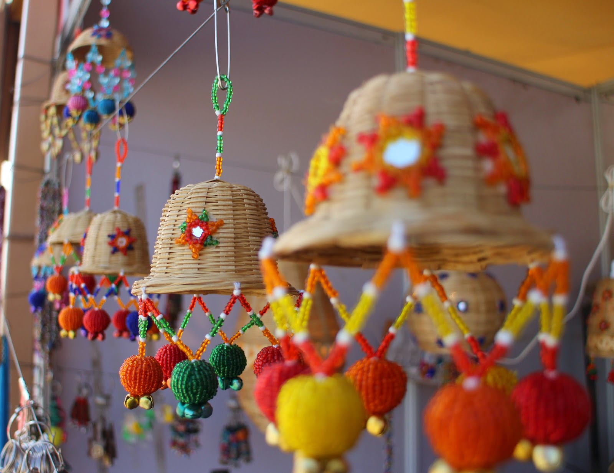
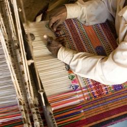

Handi Craft of Kutch
 Kutch is considered to be a haven for numerous handicrafts, which are carried on from generation to generation. The traditional basis of its prosperity has been its foreign trude in various handicrafts. The artifacts of Kutch moved not only the length and breadth of the country but also in the overseas market. The main handicrafts of the district are embroidery of ethnic style, Patchwork, terracotta, pen knives and nut crackers. A brief description of the various crafts is as follows.
EMBROIDERY
 Inherited by the bequest of craft making the Kutchi people weave their dreams in different forms of embroidery. Kutch is world renowned for its mirrored embroideries. Most of these were traditionally stitched by village women, for themselves and their families, to create festivity, honor deities, or generate wealth. Embroideries contributed to the substantial economic exchange required for marriage and fulfilled other social obligations which required gifts. Be it, thread work or leather every village has a different and a unique style of making embroidery.
HAND BLOCK PRINTING
Kutch is the homeland of a variety of hand printing textiles. Important among them are
Ajrakh prints, Batik prints and Rogan painting.
WOOD CARVING
Wood carving is one of the best handicrafts of Kutch. The Harijan people living in Dumaro and Ludia are master crafts persons of wood carving. They make various utensils like pastel oller, chapati disc, bottles, small table, glass etc. of the wood doing attractive carving. Generally, they use the teak wood and locally available `bahuv wood to prepare the fine artifacts.
MUDWALL PAINTING
House in the Banni area are living museums of beautiful paintings Rabari and Harijan women folk are traditionally experts in depicting their dreams in painting. They turn houses into homes. The clay collected is mixed with camel dung and kept for a few days. Then it is kneaded to obtain sufficient plasticity and designs are worked on the mud wall using this clay mixture. Designs of mor (peacock) Popat (Parrot) anghadi (Fingers) Vinjno (Fan).
SEASHELL TOYS
Seashell toys and dolls are made in Bhuj. Seashell is the outer case of soft bodied animals called molluscs. After the animals living inside have dried up, the shells are collected and graded according to colour and shape and used in decorative items. Birds, animals, plants, agarbati stand and figures of Gods & Goddesses are prepared by joining the appropriate coloured shells with an adhesive. Later eyes, nose, ears, garments etc are painted with oil paints. We also offers kutch tour package, rann utsav in gujarat, rann utsav, navratri tour in gujarat, navratri tour in ahmedabad, navratri gujarat, navratri ahmedabad, royal hertage gujarat, royal heritage ahmedabad, holidays in gujarat, holidays in ahmedabad, navratri dandiya, dandiya dhamal, corporate tours in gujarat, corporate tours in ahmedabad, corporate holidays in gujarat, corporate holidays in ahmedabad, luxury tours in gujarat, beach holidays gujarat, wild life tours in gujarat, pilgrim tours in gujarat, desert holidays in gujarat, mountain holidays in gujarat, adventure tourism ingujarat, rail holidays in gujarat, road holidays in gujarat, car holidays in gujarat - email us, contact us
IRON BELL WITH COPPER COATING
 Without modern Communications the sound of bells helped shepherds and cowherds communities to locate
their flocks from a distance. Waste iron sheets are bought from Bhuj market. Outlines are marked on
the sheets using master patterns (there are about 13 patterns ranging from 3" X 12/ 8". Following the
mark the sheet is cut. Then it is converted to the shape of bell with punching tools. Designs are worked
out before shaping it. The handle is fixed. Later copper (tamba) brass (pital) and tankankar in the form
of small bits and powder is sprinkeld on the bell immersed in mud water. Then clay is mixed with cotton which
serves as a mould. Then the mould is placed on a coal fire with the bell and the temperature is increased to
fuse the metal. Later near to its mouth the bell is beaten with hammer to obtain the desired sound.
Bells have an unusual resonant sound due to the individual tuning of each bell. Finally a tongue made of wood
is fixed from inside. Kutchi bells are moving very well in the foreign market as church bells.
Without modern Communications the sound of bells helped shepherds and cowherds communities to locate
their flocks from a distance. Waste iron sheets are bought from Bhuj market. Outlines are marked on
the sheets using master patterns (there are about 13 patterns ranging from 3" X 12/ 8". Following the
mark the sheet is cut. Then it is converted to the shape of bell with punching tools. Designs are worked
out before shaping it. The handle is fixed. Later copper (tamba) brass (pital) and tankankar in the form
of small bits and powder is sprinkeld on the bell immersed in mud water. Then clay is mixed with cotton which
serves as a mould. Then the mould is placed on a coal fire with the bell and the temperature is increased to
fuse the metal. Later near to its mouth the bell is beaten with hammer to obtain the desired sound.
Bells have an unusual resonant sound due to the individual tuning of each bell. Finally a tongue made of wood
is fixed from inside. Kutchi bells are moving very well in the foreign market as church bells.
PEN - KNIVES AND NUTCRACKERS
 Pen knives and nutcrackers of Kutch have travelled the length and breadth of the country. People of Kutch prefer
to present penknives or nutcrackers to their relatives and friends living outside Kutch. The artisans, who made
swords during the royal family`s patronage, are now producing the penknives and nutcrackers. The iron bars are
reduced to workable small pieces. Then the pieces are worked by using a forging machine
Pen knives and nutcrackers of Kutch have travelled the length and breadth of the country. People of Kutch prefer
to present penknives or nutcrackers to their relatives and friends living outside Kutch. The artisans, who made
swords during the royal family`s patronage, are now producing the penknives and nutcrackers. The iron bars are
reduced to workable small pieces. Then the pieces are worked by using a forging machine